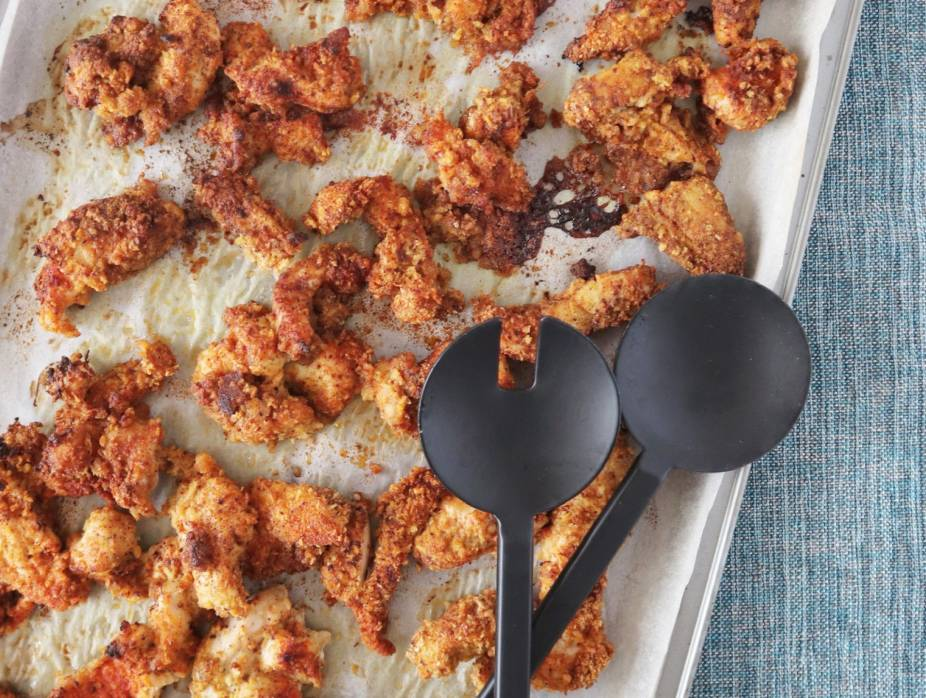
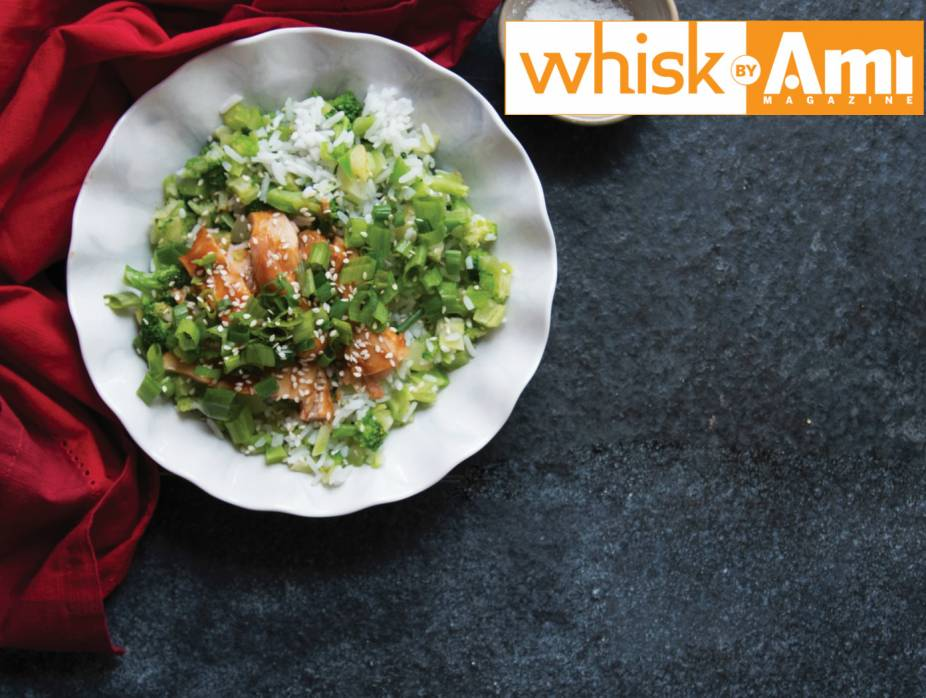

Difficulty: Easy
Diet: Gluten Free
Cooking and Prep: 9.5 hrs
Serves: 4
Allergy: No Allergens
Ingredients
Main Ingredients
1 whole chicken, cut in quarters
1 cup pitted prunes
1/2 cup Gefen Pitted Green Olives
1/2 cup capers (with 3 teaspoons liquid)
1/4 cup dried oregano
1/2 cup Tonnelli Red Wine Vinegar
1/2 cup olive oil
1 head garlic, minced
kosher salt
pepper
1 cup brown sugar
1 cup Baron Herzog Chenin Blanc or other white wine
1/2 cup fresh parsley
Prepare the Chicken
Preheat oven to 350 degrees Fahrenheit.
Combine prunes, olives, capers, caper liquid, oregano, vinegar, olive oil and garlic in large shallow ovenproof dish. Season with salt and pepper.
Combine prunes, olives, capers, caper liquid, oregano, vinegar, olive oil and garlic in large shallow ovenproof dish. Season with salt and pepper.
Uncover chicken and sprinkle with brown sugar.
Pour wine over chicken and bake one hour covered. Uncover chicken and bake 30 minutes or until golden brown.
Broil for five minutes, if you prefer the skin lightly brown. Garnish with parsley.
Note: Allowing chicken to marinate overnight is essential to really soak up all the flavours as well as producing a tender and juicy chicken.

Chicken Poppers
Difficulty: Easy
Diet: Low Fat, Low Carb
Cooking and Prep: 30 min
Serves: 6
Allergy: Contains GLUTEN, WHEAT
Ingredients
Main Ingredients
2 chicken breasts, cut into strips (I cut when partly frozen - much easier)
1/2 cup Gefen Breadcrumbs (or homemade-I blitz up leftover challah and store in freezer)
2-3 tablespoons Manischewitz Honey
1 teaspoon shawarma spice blend
1 teaspoon paprika
1/2 teaspoon sumac
salt, to taste
pepper, to taste
chili powder, to taste
Glicks Olive Oil or avocado oil spray
Prepare the Chicken Poppers
Preheat oven to 200 degrees Celsius (400 degrees Fahrenheit) and line baking tray with Gefen Easy Baking Paper.
In a ziptop bag, add chicken, bread crumbs, honey, schwarma spice, paprika, sumac, salt, and pepper. Shake the bag all around, making sure all the pieces are coated.
Place on baking sheet, separate pieces out to ensure crispiness on all sides. Sprinkle a dash of chili powder on top (optional).
Spritz the tops once or twice with oil spray (this also ensures crispiness).
Place in oven and bake for 15-20 minutes, flipping halfway through so the under side can get good crunch too.

Hoisin Chicken with Broccoli Rice
Besides for the speed and convenience, one of the reasons I keep Heaven & Earth Brown Rice in my freezer is because sometimes I only need a little bit, especially if I’m preparing a different dinner for my husband than I am for my kids. And it’s very hard to cook a little bit (not to mention getting an extra pot dirty). It’s perfect for those times when I’m preparing a dish for only one or two members of the family.
This one-pot meal takes minimal time and makes minimal mess. Hoisin sauce is so flavorful on its own...you won’t need to take out half the pantry to make a sauce.
Difficulty: Easy
Diet: Gluten Free
Cooking and Prep: 20 min
Serves: 2
Allergy: Contains SESAME, SOY
Ingredients
Main Ingredients
2 tablespoons Gefen Sesame Oil
1 onion, diced
2 cups frozen chopped broccoli
salt, to taste
1 packet Heaven & Earth 3 Minute Jasmine Rice
1 pound dark chicken cutlets
1/3 cup hoisin sauce
2 tablespoons water
sesame seeds, for sprinkling
chopped scallions
Prepare the Hoisin Chicken with Broccoli Rice
Heat oil in a sauté pan. Add onion and sauté for five minutes. Add broccoli and sauté over high heat for two additional minutes, or until broccoli is hot.
Microwave rice for three or four minutes (depending on the strength of your microwave) according to package instructions. Add onion-broccoli mixture to rice and season with salt to taste.
Season chicken with salt and pepper. Heat oil in the same pan. Add chicken and cook, about four to five minutes per side. Add hoisin sauce and water to pan and stir to coat chicken.
Add broccoli rice to the bowls. Slice chicken and add on top. Top with sesame seeds and scallions.